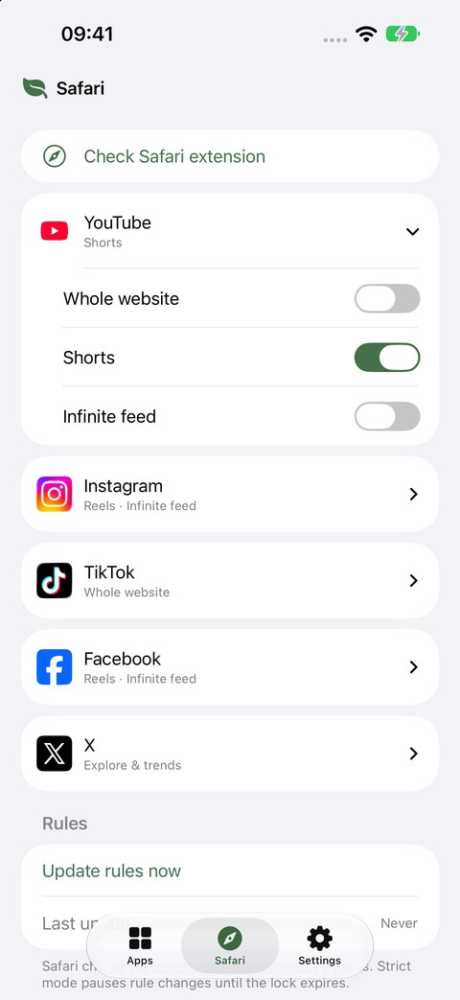

iPhone आणि iPad साठी ॲप अवरोधित करणे
Reels आणि Shorts ब्लॉक करा. थेट तुमच्या ॲप्समध्ये.
Reels, Shorts आणि Instagram, YouTube, Facebook, X (Twitter) आणि इतर सामाजिक ॲप्समधील इतर लहान व्हिडिओ ब्लॉक करा. किंवा Screen Time सह ब्लॉक करण्यासाठी कोणतेही ॲप निवडा.
मोफत आणि मुक्त स्रोत कोणत्याही खात्याची गरज नाही
लहान व्हिडिओ आढळल्यावर, Slowth ॲप ब्लॉक करते. Screen Time वापरते आणि तुम्ही सुरू केलेले स्क्रीन मॉनिटरिंग. ते कसे कार्य करते


तुमच्या ॲप्समध्ये iPhone आणि iPad
Safari iPhone, iPad आणि Mac मध्ये देखील
तुमच्या डिव्हाइसवर खाते नाही. ट्रॅकिंग नाही.

तुमचे ॲप्स. आपले अवरोधित करण्याचे नियम.
ॲप्स निवडा. अंतहीन स्क्रोलिंग थांबवा.
तुम्ही iPhone आणि iPad वर निवडलेले कोणतेही ॲप ब्लॉक करा. किंवा ऑन-डिव्हाइस सामग्री शोधासह सोशल ॲप्सवर लहान व्हिडिओ आणि कथांमध्ये व्यत्यय आणा.
- तुम्ही निवडलेले कोणतेही ॲप
- Apple च्या Screen Time पिकर मधील ॲप्स निवडा — सोशल नेटवर्क्स, गेम्स आणि तुम्हाला विश्रांती हवी असलेली कोणतीही गोष्ट. मॉनिटरिंग बंद असताना, निवडलेले ॲप्स ब्लॉक केले जातात; प्रवेशास परवानगी असताना सॉफ्ट ब्लॉकिंग आणि तात्पुरते विराम बदलतात.
- ॲपमध्ये Reels आणि Shorts
- Instagram Reels, YouTube Shorts, Facebook, X (Twitter) आणि लहान व्हिडिओंसह इतर सामाजिक नेटवर्क: तुम्हाला व्यत्यय आणू इच्छित असलेली सामग्री निवडा. मॉनिटरिंग चालू असताना, डिटेक्शन थोडक्यात ॲप ब्लॉक करते जेणेकरून तुम्ही दूर जाऊ शकता.
- जेव्हा आपल्याला आवश्यक असेल तेव्हा विराम द्या
- तात्पुरत्या प्रवेशासाठी एक पान वापरा, नंतर आपल्या सीमांवर परत या. ॲप्स आणि Safari iPhone आणि iPad वर दररोज तीन विराम सामायिक करतात.
ॲप संरक्षण, चरण-दर-चरण
अवरोधित करणारे ॲप तीन चरणांमध्ये सेट करा.
तुमचे ॲप्स निवडा. तुम्ही विशिष्ट सामग्री शोधू इच्छिता तेव्हा निरीक्षण सुरू करा.
- 1
Slowth मिळवा
Slowth स्थापित करा, ॲप्स टॅब उघडा आणि Screen Time प्रवेशास अनुमती द्या. हे iOS तुम्ही निवडलेले ॲप्स ब्लॉक करू देते.
- 2
तुमचे ब्लॉकिंग नियम निवडा
तुम्हाला ब्लॉक करायचे असलेले ॲप्स निवडा. समर्थित सामग्रीसाठी, लहान व्हिडिओ, कथा किंवा दोन्ही निवडा.
- 3
ॲप निरीक्षण सुरू करा
मॉनिटरिंग सुरू करा वर टॅप करा आणि Apple च्या स्क्रीन ब्रॉडकास्ट प्रॉम्प्टची पुष्टी करा. डिटेक्शन तुमच्या डिव्हाइसवर चालते; स्क्रीन प्रतिमा जतन किंवा अपलोड केल्या जात नाहीत.
Safari मध्ये देखील कार्य करते
विचलन अवरोधित करा. तुमच्या ब्राउझरमध्येही.
तुम्हाला स्क्रोल करत राहणाऱ्या विचलित न होता तुम्हाला आवश्यक असलेल्या वेबसाइट्स वापरा.
- लहान व्हिडिओ लपवा
- YouTube Shorts आणि Instagram आणि Facebook Reels लपवा. X वरील एक्सप्लोर आणि ट्रेंड काढा.
- फीड कुठे संपेल ते निवडा
- Instagram आणि Facebook साठी फीड नियंत्रणे अंतहीन स्क्रोलिंग कमी करतात. Instagram च्या फीड पर्यायामध्ये एक्सप्लोर, स्टोरीज आणि अधिक Reels पृष्ठभाग देखील समाविष्ट आहेत.
- जेव्हा तुम्हाला गरज असेल तेव्हा संपूर्ण वेबसाइट ब्लॉक करा
- TikTok सह संपूर्ण समर्थित साइट ब्लॉक करा. प्रति साइट सेटिंग्ज निवडा आणि वेबसाइट बदलत असताना ब्लॉकिंग नियम रिफ्रेश करा.
iPhone, iPad आणि Mac वर कार्य करते. Safari ला स्क्रीन ब्रॉडकास्टची आवश्यकता नाही.

तुमच्या Mac वर
कमी स्क्रोलिंग. Safari विस्तारासह.
विचलित करणारे विभाग लपवताना उर्वरित साइट उपलब्ध ठेवा किंवा समर्थित वेबसाइट पूर्णपणे ब्लॉक करा.
Mac समर्थन Safari साठी आहे. ॲप-मधील ओळख आणि स्क्रीन मॉनिटरिंग ही iPhone आणि iPad वैशिष्ट्ये आहेत.
ॲप ओळख तुम्ही स्वतः सुरू करता ते स्क्रीन ब्रॉडकास्ट वापरते. ते चालत असताना, Slowth स्क्रीन प्रतिमा प्राप्त करते, ज्यामध्ये इतर ॲप्स आणि संवेदनशील माहिती समाविष्ट असू शकते — ॲप्स निवडल्याने स्क्रीन ऍक्सेस नाही तर ब्लॉक करणे मर्यादित होते.
App Store ॲपमध्ये, प्रतिमांवर तात्पुरते डिव्हाइस मेमरीमध्ये प्रक्रिया केली जाते. फ्रेम सेव्ह किंवा अपलोड केल्या जात नाहीत आणि ऑडिओकडे दुर्लक्ष केले जाते. निरीक्षण सक्रिय असताना iOS त्याचे रेकॉर्डिंग सूचक दर्शविते.
कोणतेही खाते, विश्लेषण किंवा जाहिरात SDK नाही. Safari फिल्टरिंग स्थानिक आहे; नियम अद्यतने डाउनलोड करणे अद्याप एक सामान्य नेटवर्क विनंती करते.
मी Instagram Reels Instagram ॲपमध्ये ब्लॉक करू शकतो का?
होय. iPhone किंवा iPad वर, Instagram निवडा, शॉर्ट-व्हिडिओ ब्लॉकिंग सक्षम करा आणि Slowth मध्ये निरीक्षण सुरू करा. Reels आढळल्यावर, Screen Time संपूर्ण Instagram ॲप तात्पुरते ब्लॉक करते. Slowth Reels टॅब काढत नाही. तुम्ही स्वतंत्रपणे कथा निवडू शकता. Instagram ॲप अवरोधित करणे सेट करा.
मी YouTube Shorts YouTube ॲपमध्ये ब्लॉक करू शकतो का?
होय. YouTube निवडा, शॉर्ट-व्हिडिओ ब्लॉकिंग सक्षम करा आणि निरीक्षण सुरू करा. Slowth Shorts शोधते आणि YouTube तात्पुरते ब्लॉक करते. हे तुम्हाला डिटेक्शन दरम्यान इतर सामग्री वापरू देण्यासाठी डिझाइन केले आहे, परंतु ओळखणे चुका करू शकतात. स्वतंत्र Safari विस्तार YouTube वेबसाइटवर Shorts लपवतो.
मी Snapchat, TikTok किंवा दुसरे ॲप ब्लॉक करू शकतो का?
होय. तुम्ही ऍपलच्या Screen Time पिकरमध्ये उपलब्ध ॲप्स निवडू शकता, त्यात Snapchat आणि TikTok यांचा समावेश आहे. मॉनिटरिंग बंद असताना, निवडलेले संरक्षित ॲप्स ब्लॉक केले जातात जोपर्यंत त्यांना तात्पुरता प्रवेश किंवा सॉफ्ट ब्लॉकिंग परवानगी देत नाही. शॉर्ट-व्हिडिओ शोधण्यासाठी, मॉनिटरिंग चालू करा. स्क्रीनवर काय दिसते यावर ओळख अवलंबून असते आणि चुका होऊ शकतात. मॉनिटरिंगशिवाय ब्लॉक करणे कसे कार्य करते .
हे Facebook, X (Twitter) आणि इतर सामाजिक ॲप्समध्ये कार्य करते का?
होय. Instagram आणि YouTube पर्यंत मर्यादित न राहता, Facebook आणि X (Twitter) सह, सामाजिक ॲप्सवर शॉर्ट-व्हिडिओ ओळख कार्य करते. ॲप निवडा, लहान व्हिडिओ किंवा कथा निवडा आणि निरीक्षण सुरू करा. डिटेक्शन स्क्रीन लेआउटवर अवलंबून असते, त्यामुळे ती सामग्री चुकवू शकते किंवा सामान्य स्क्रीन ब्लॉक करू शकते.
Safari ला स्क्रीन रेकॉर्डिंगची आवश्यकता आहे का?
क्र. Safari समर्थित वेबसाइट फिल्टर करण्यासाठी स्वतःचा विस्तार वापरतो. केवळ iPhone आणि iPad ॲप्समधील सामग्री ओळखण्यासाठी स्क्रीन प्रवेश आवश्यक आहे.
निरीक्षण थांबते तेव्हा काय होते?
निवडलेले संरक्षित ॲप्स रेकॉर्डिंगशिवाय ब्लॉक केले जातात. सॉफ्ट ब्लॉकिंग Slowth सोडल्यानंतर ॲपला थोडक्यात अनुमती देऊ शकते, नंतर वापरल्यावर ते पुन्हा ब्लॉक करा. सक्रिय तात्पुरता-प्रवेश विराम देखील प्रवेशास अनुमती देतो. या मोड्सबद्दल वाचा.
मी ब्लॉक करण्यापासून ब्रेक घेऊ शकतो का?
होय. iPhone आणि iPad वर, एक पान निवडलेल्या ॲप्स आणि Safari वर तात्पुरता प्रवेश देते. सामायिक विराम प्रणाली प्रायोगिक आहे; iOS निर्बंध पुनर्संचयित करण्यास विलंब करू शकतात. शोध विश्रांती स्वतंत्र आहेत आणि पाने खर्च करत नाहीत.
कठोर मोड लॉक काय करते?
24 तासांसाठी, सक्षम निर्बंध कमकुवत केले जाऊ शकत नाहीत. तुम्ही निर्बंध जोडू शकता, परंतु लॉक दरम्यान संपूर्ण साइट ब्लॉकिंग सक्षम करू शकत नाही. टायमर जिवंत रीस्टार्ट होतो. सुरू करण्यापूर्वी विरामांना अनुमती आहे की नाही ते सेट करा. ही एक वचनबद्धता मदत आहे, छेडछाड-प्रूफ पालक नियंत्रण नाही.
Slowth विनामूल्य आहे का? Android ॲप आहे का?
Slowth GPLv3 अंतर्गत विनामूल्य आणि मुक्त स्रोत आहे. Android एक प्रस्तावित संशोधन आणि प्रोटोटाइप वर्कस्ट्रीम आहे, उपलब्ध ॲप नाही.
काळजीने बनवलेले. ओपन सोर्स कोडसह.
एक छोटासा प्रकल्प. दीर्घकालीन बांधले.
Slowth Denis Malin द्वारे विकसित आणि देखभाल केली जाते. स्त्रोत कोड सार्वजनिकरित्या उपलब्ध आहे. तुमचा फीडबॅक ॲप सुधारण्यात मदत करतो.
निधी देणाऱ्या संस्था आणि भागीदारांसाठी
लोकांना कमी वेळ स्क्रोल करण्यात मदत करा.
प्रकल्प सहा महिन्यांच्या विकासाच्या टप्प्यासाठी $10,000 अनुदान मागत आहे. ही निधीची विनंती आहे.
- स्पष्ट सेटअप आणि अधिक विश्वासार्ह iPhone, iPad आणि Mac अनुभव.
- उत्तम सामग्री ओळख, मूल्यमापन आणि सुसंगतता चाचणी.
- संकलित ॲप आवृत्त्यांची स्वतंत्र तपासणी, सार्वजनिक पोहोच आणि संभाव्य Android ॲपवर प्रायोगिक प्रोटोटाइपसह संशोधन.
कमी विचलित